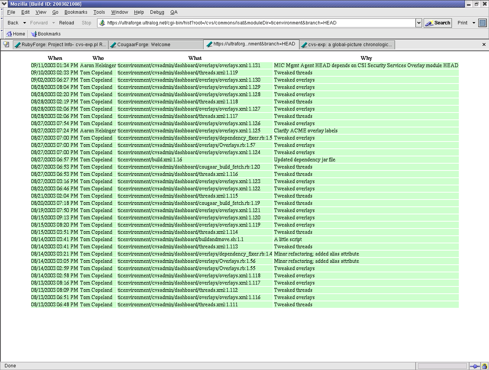

Ruby-CVS-exp (project page, download) is a Ruby wrapper around Sitaram Iyer's excellent little cvs-exp.pl utility.
Ruby-CVS-exp makes is possible to convert the output of cvs-exp to HTML (screenshot is below). This is handy for displaying recent commits to a project, as you can see by clicking on one of the "Recent" links here.
Very generally, you can put CVSHistory.rb in your cgi-bin directory and then use a little CGI script like this:
#!/usr/local/bin/ruby
require 'cgi'
require 'CVSHistory'
cgi = CGI.new("html3")
root=cgi['root'][0]
moduleDir=cgi['moduleDir'][0]
branch=cgi['branch'][0]
days=30
if cgi['days'][0] != nil
days = cgi['days'][0]
end
cgi.out {
cgi.html {
cgi.body {
p = Params.new("/tmp/histwork/cvs-exp.pl", root, moduleDir, branch, days.to_i)
Dir.chdir("/tmp/histwork")
`cvs -Q -d#{root} co #{p.moduleDir}`
c = CVSLogWrapper.new(p)
`rm -rf #{p.moduleDir}`
c.getHTML()
}
}
}
to create the HTML. Note that this CGI script expects three parameters - the cvs root, the module directory name, and the branch name. There's also an optional "days" parameter which tells it how many days of history to display.
